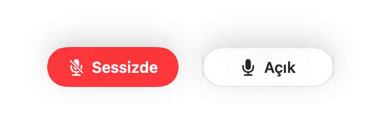
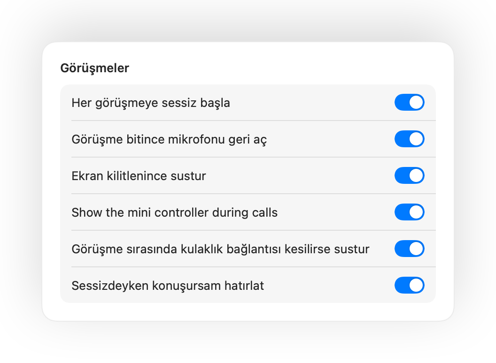
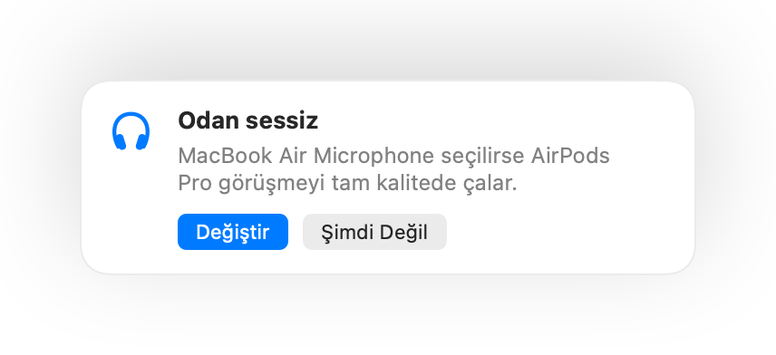

Mac'inin mikrofonunu her yerden sustur.
AirPods sapına bas veya tek bir klavye kısayolu kullan. Muffle doğrudan mikrofonu kapattığı için Google Meet, Zoom, Teams, Slack ve diğer her uygulama yalnızca sessizlik duyar.
3 gün boyunca ücretsiz. Sonra tek ödeme, abonelik yok. macOS 14 Sonoma ve daha yenisi için.

Mikrofonunu kullanan her uygulamayla çalışır
- Google Meet
- Zoom
- Microsoft Teams
- Slack
- Discord
- FaceTime
- Webex
- Skype
- SoWork
- Gather
- Chrome
- Safari
- Arc
- Edge
- Firefox
Muffle mikrofonu donanım seviyesinde susturur; bu yüzden hangi uygulamanın, tarayıcının veya sekmenin kullandığı fark etmez.
Bir görüşmede Mac'inin yapması gereken her şey
Susturmak için AirPods'una bas
Herhangi bir görüşme sırasında susturmak için sapa bir kez bas, açmak için tekrar bas. Google Meet ve diğer web görüşmelerinin AirPods basışını yok saydığı Chrome'da bile çalışır.
Her uygulama için tek kısayol
Control-Option-M seni her yerde susturur, görüşme arka plandaki bir sekmede olsa bile. Sessizdeyken konuşmak için basılı tut, tekrar susmak için bırak.
“Sessizdesin” hatırlatması
Sessizdeyken konuşmaya başlarsan Muffle seni uyarır; böylece bütün fikrini kimse duymadan anlatıp durmazsın.
Görüşmeler otomatik pilotta
Her görüşmeye sessiz başla, görüşme bittiğinde mikrofonu geri aç ve Mac'ini kilitlediğinde mikrofonu sustur.
Yayında olup olmadığını hep bil
Küçük ve ekranda duran bir düğme görüşme sırasında mikrofon durumunu gösterir. Susturmak ya da açmak için tıkla.
Mikrofon seviyen sabit kalır
Chrome, Zoom ve Teams mikrofon seviyeni kendiliğinden değiştirir. Seviyeyi kilitle, Muffle onu eski haline getirsin.
AirPods'unun şarjı bitse de güvendesin
Görüşmenin ortasında kulaklığının bağlantısı kesilirse, ses Mac'inin mikrofonuna geçip tüm odayı yayına vermeden önce Muffle susturur.
Kestirmeler ve Denetim Merkezi
Kestirmeler uygulamasından, Siri'den, Stream Deck'ten, Raycast'ten veya Denetim Merkezi'ndeki bir düğmeyle sustur.
Bas-konuş ya da bas-sustur
Kısayolunun nasıl çalışacağını seç: basınca aç/kapat, basılı tutunca konuş ya da öksürürken basılı tutarak sustur. Ayrı susturma ve açma tuşları ekle ya da Sağ ⌥ veya fazladan bir fare düğmesi gibi tek bir tuşu basılı tut.
Sessiz kalınca tekrar susturma
Tek bir şey söylemek için mikrofonu mu açtın? Ardından seçtiğin süre boyunca sessiz kalırsan Muffle seni tekrar susturur. Yalnızca sesin dikkate alınır; klavye ya da arka plan gürültüsü sayılmaz.
Ortama en uygun mikrofon
Sessiz bir odada AirPods kullanırken Muffle, kulaklığın görüşmeyi tam kalitede çalabilmesi için Mac'inin mikrofonunu önerir. Ortam gürültülü olduğunda ise AirPods mikrofonunu önerir.
Gözden kaçırmak imkansız
Ekran kenarlarında yeşil veya kırmızı bir parlama, renkli bir menü çubuğu simgesi, ekranda yüzen bir düğme ve her mikrofon için ayrı ayrı kapatabileceğin bir ses. Hoşuna gidenleri aç.




Bir dakikada kur
- Muffle'ı Mac App Store'dan yükle ve mikrofon iznini ver.
- Her zamanki gibi herhangi bir uygulamada görüşmeye katıl.
- Susturmak için AirPods sapına bas, Control-Option-M kısayoluna bas veya menü çubuğundaki ikona tıkla.
Tasarımı gereği gizli
Muffle hiçbir sesi kaydetmez, saklamaz ya da göndermez. Yalnızca mikrofonunu açıp kapatır ve ses şiddetini okur. Hesap yok, analiz yok, takip yok.
Sorular
Muffle, Chrome'daki Google Meet ile çalışır mı?
Evet. Chrome, AirPods susturma basışını web görüşmelerine iletmez; bu yüzden Muffle bu basışı alır ve doğrudan mikrofonu susturur. Aynı durum tarayıcı sekmesindeki her görüşme için geçerlidir.
Diğer insanlar beni sessizde görür mü?
Görüşme uygulaman mikrofonunu hâlâ açık gösterebilir; çünkü Muffle uygulamanın düğmesini değil, mikrofonun kendisini kapatır. İnsanlar her iki durumda da sessizlik duyar. Menü çubuğundaki Muffle ikonu sen sessizdeyken kırmızıya döner.
Hangi AirPods modelleri çalışır?
AirPods Pro, AirPods 3 ve daha yenisi, AirPods Max ve arama kontrollerini destekleyen Beats modelleri. Klavye kısayolu ve menü çubuğu ise her mikrofonla çalışır.
Zoom, Teams, Slack ve Discord ile çalışır mı?
Evet. Muffle, Mac'inde mikrofonu kullanan her uygulamayla çalışır; masaüstü uygulamaları ve tarayıcı görüşmeleri buna dahildir.
Abonelik var mı?
Hayır. Her özelliği 3 gün boyunca ücretsiz dene, sonrasında tek bir satın almayla Muffle'ın kilidini aç.
Muffle neden mikrofon iznine ihtiyaç duyuyor?
macOS, AirPods basışlarını sadece mikrofonu kullanan uygulamalara iletir; bu yüzden Muffle görüşmeler sırasında sessiz bir bağlantı açık tutar. Hiçbir şey kaydedilmez.
Sessizdeyken Muffle'dan çıkarsam ne olur?
Muffle kapandığında mikrofonunu geri açar, bu sayede asla sessizde takılı kalmazsın.
Hangi macOS sürümleri destekleniyor?
macOS 14 Sonoma ve daha yenisi. Denetim Merkezi düğmesi için macOS 26 veya daha yenisi gerekir.
Muffle'da bas-konuş özelliği var mı?
Evet. Ayarlar'da Bas-konuş seçeneğini belirle ve konuşmak için kısayolu basılı tut. Sağ ⌥, fn ya da fazladan bir fare düğmesi gibi tek bir tuşu da basılı tutabilirsin.
Görüşmeler sırasında AirPods ses kalitesi neden düşüyor?
Bir görüşme AirPods mikrofonunu kullandığında AirPods, sesi daha düşük kalitede çalan arama moduna geçer. Muffle sessiz bir odada bunun yerine Mac'inin mikrofonunu önerir; böylece AirPods görüşmeyi tam kalitede çalmaya devam eder.
Arka plan gürültüsü mikrofonumu açık tutar mı?
Hayır. Muffle konuşmayı Apple'ın aygıt içi ses analiziyle algılar; bu yüzden yalnızca konuşman dikkate alınır. Klavye, tıklamalar ve arka plan gürültüsü sayılmaz ve hiçbir şey kaydedilmez.
Rehberler
- Mac'te AirPods ile Google Meet nasıl susturulur?Mac Chrome'da AirPods sapına basınca Google Meet susmaz. Muffle ile Meet görüşmesini AirPods, kısayol veya menü çubuğundan susturma rehberi.
- Mac'te AirPods veya bir kısayolla Zoom nasıl susturulur?Zoom penceresi arka plandayken bile AirPods sapı veya tek bir kısayolla Zoom'u sustur. Uygulamada ve tarayıcıda çalışan pratik susturma çözümü.
- Mac'te AirPods ile Microsoft Teams nasıl susturulur?Mac'te Teams toplantılarını AirPods, genel kısayol veya menü çubuğundan sustur. Hem Teams uygulamasında hem de web sürümünde mikrofondan susturma.
- Mac'te herhangi bir uygulamadayken Slack huddle nasıl susturulur?Slack huddle görüşmelerini tek bir kısayol veya AirPods ile herhangi bir uygulamadan sessize al. Huddle penceresini aramak zorunda kalma.
- Mac'te Discord için bas konuş ve genel susturma kısayoluMac'inde Discord için tek bir bas konuş ve susturma kısayolu kullan veya AirPods ile sustur. Hem Discord uygulamasında hem tarayıcıda çalışır.
- Mac'te Webex herhangi bir uygulamadan nasıl susturulur?Webex penceresinde olmasan bile Mac'inde tek bir kısayol veya AirPods ile Webex toplantılarını sustur. Ekran paylaşırken bile tam kontrol sağla.
Her uygulamada, Mac'inde mikrofonunu susturman için kısa ve pratik yanıtlar.
Susturma düğmesini aramaktan kurtul.
Muffle'ı 3 gün boyunca ücretsiz dene.
Yakında Mac App Store'da